Руные слова для версии 1.10 |
Оружие |
Название |
Предмет |
Руны |
Свойства |
Beast |
5-ти сокетный Топор/Скипетр/Молот
(5 Socket Axes/Scepters/Hammers) |
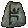Ber + 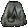Tir + 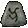Um + 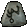Mal + Lum |
Добавляет ауру Fanaticism, уровня 9, когда предмет надет
+40% увеличенная скорость атаки
+240-270% увеличенный урон (варьируется)
20% шанс сокрушительного удара
25% шанс открытой раны
+3 к навыку Werebear (только друид)
+3 к навыку Lycanthropy (только друид)
Запрещает монстру лечиться
+25-40 к силе (варьируется)
+10 к энергии
+2 к мане за каждое убийство
Добавляет навык Summon Grizzly, уровня 13 (5 зарядов) |
Breath of the Dying |
6-ти сокетное оружие
(6 Socket Weapons) |
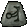Vex + 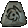Hel +  El + 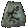Eld + Zod + 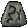Eth El + 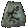Eld + Zod + 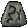Eth |
50% шанс создать навык Poison Nova, уровня 20, когда вы убиваете монстра
Неразрушимый
+60% увеличенная скорость атаки
+350-400% увеличенный урон (варьируется)
+200% урона по мертвецам
-25% защиты у цели
+50 к рейтингу атаки
+50 к рейтингу атаки против мертвецов
7% маны крадется от удара
12-15% крадет жизни от удара (варьируется)
Запрещает монстру лечиться
+30 ко всем характеристикам
+1 к радиусу освещения
Требования -20% |
Call To Arms* |
5-ти сокетное оружие
(5 Socket Weapons) |
 Amn + 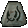Ral + Mal + 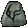Ist + 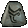Ohm Amn + 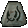Ral + Mal + 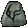Ist + 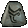Ohm
|
+1 ко всем навыкам
+40% увеличенная скорость атаки
+250-290% увеличенный урон (варьируется)
Добавляет 5-30 урона огнем
7% крадет жизни от удара
Добалвяте навык Battle Command, уровня 2-6 (варьируется)*
Добалвяте навык Battle Orders, уровня 1-6 (варьируется)*
Добалвяте навык Battle Cry, уровня 1-4 (варьируется)*
Запрещает монстру лечиться
регенерация жизней +12
30% больше шансов найти магический предмет |
Chaos |
3-х сокетные когти ассасина
(3 Socket Claws) |
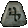Fal + Ohm + Um |
9% шанс создать навык Frozen Orb, уровня 11, при нанесении удара
11% шанс создать навык Charged Bolt, уровня 9 при нанесении удара
+35% увеличенная скорость атаки
+290-340% увеличенный урон (варьируется)
Добавляет 216-471 магического урона
25% шанс открытой раны
Добалвяет навык Whirlwind, уровня 1
+10 к силе
+15 жизни за каждое убийство демона |
Crescent Moon |
3-х сокетные Топоры/Мечи/Древковое оружие
(3 Socket Axes/Swords/Polearms) |
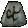Shael + Um + Tir |
10% шанс создать навык Chain Lightning, уровня 17 при нанесении удара
7% шанс создать навык Static Field, уровня 13 при нанесении удара
+20% увеличенная скорость атаки
+180-220% увеличенный урон (варьируется)
Игнорирует защиту цели
-35% сопротивляемость цели от молнии
25% шанс открытой раны
+9-11 Magic Absorb (варьируется)
+2 к мане за каждое убийство
Добавляет навык Summon Spirit Wolf, уровня 18 (30 зарядов) |
Doom |
5-ти сокетный Топор/Молот/Древковое оружие
(5 Socket Axes/Polearms/Hammers) |
Hel + Ohm + Um + 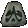Lo + 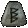Cham |
5% шанс создать навык Level 18 Volcano при нанесении удара
Добавляет ауру Holy Freeze, уровня 12 когда предмет надет
+2 ко всем навыкам
+45% увеличенная скорость атаки
+330-370% увеличенный урон (варьируется)
-(40-60)% сопротивляемость цели от холода (варьируется)
20% смертельного удара
25% шанс открытой раны
Запрещает монстру лечиться
Шанс полностью заморозить монстра +3
Требования -20% |
Eternity |
5-ти сокетное оружие ближнего боя
(5 Socket Melee Weapons) |
Amn + Ber + Ist + 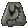Sol + 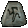Sur |
Неразрушимый
+260-310% увеличенный урон (варьируется)
+9 к минимальному урону
7% крадет жизни от удара
20% шанс сокрушительного удара
Уменьшает радиус обзор монстра
Замедляет цель на 33%
Регенерация маны + 16%
регенерация жизней +16
Персонаж не может быть заморожен
30% больше шансов найти магический предмет
Добавляет навык Revive, уровня 8 (88 зарядов) |
Famine |
4-х сокетный Топор/Молот
(4 Socket Axes/Hammers) |
Fal + Ohm + 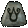Ort + 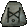Jah |
+30% увеличенная скорость атаки
+320-370% увеличенный урон (варьируется)
Игнорирует защиту цели
Добавляет 180-200 урона магией
Добавляет 50-200 урона огнем
Добавляет 51-250 урона молнией
Добавляет 50-200 урона холодом
12% крадет жизни от удара
Запрещает монстру лечиться
+10 к силе |
Hand of Justice |
4-х сокетное оружие
(4 Socket Weapons) |
Sur + Cham + Amn + Lo |
100% шанс создать навык Blaze When, уровня 36 при получении нового уровня
100% шанс создать навык Meteor, уровня 48 при смерти персонажа
Добавляет ауру Holy Fire уровня 16, когда предмет надет
+33% увеличенная скорость атаки
+280-330% увеличенный урон (варьируется)
Игнорирует защиту цели
7% крадет жизни от удара
-20% сопротивляемость цели от огня
20% смертельного удара
Уменьшает радиус обзор монстра
Шанс полностью заморозить монстра +3 |
Heart of the Oak |
4-х сокетный Посох/Булава*
(4 Socket Staves/Maces) |
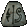Ko + Vex + Pul + 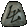 Thul |
+3 ко всем навыкам
+40% быстрое чтение заклинаний
+75% урона по демонам
+100 к рейтингу атаки Against Demons
Добавляет 3-14 урона холодом, длительность заморозки 3 секунды
7% маны крадется от удара
+10 к ловкости
регенерация жизней +20
увеличенное количество маны на 15%
Все сопротивляемости +30-40 (варьируется)
Добавляет навык Oak Sage, уровня 4 (25 зарядов)
Добавляет навык Raven, уровня 14 (60 зарядов) |
Kingslayer |
4-х сокетный Меч/Топор
(4 Socket Swords/Axes) |
Mal + Um + 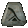Gul + Fal |
+30% увеличенная скорость атаки
+230-270% увеличенный урон (варьируется)
-25% защиты у цели
20% Bonus к рейтингу атаки
33% шанс сокрушительного удара
50% шанс открытой раны
Добавляет навык Vengeance, уровня 1
Запрещает монстру лечиться
+10 к силе
40% больше золота с монстров |
Passion |
4-х сокетное оружие
(4 Socket Weapons) |
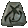Dol + Ort + Eld + 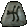Lem |
+25% увеличенная скорость атаки
+160-210% увеличенный урон (варьируется)
50-80% Бонус к рейтингу атаки (варьируется)
+75% урона по мертвецам
+50 к рейтингу атаки против мертвецов
Добавляет 1-50 урона молнией
Добавляет навык Berserk, уровня 1
Добавляет навык Zeal, уровня 1
Уменьшает радиус обзор монстра +10
25% при ударе обратить монстра в бегство
75% больше золота с монстров
Добавляет навык Heart of Wolverine, уровня 3 (12 зарядов) |
Wind |
2-х сокетное оружие ближнего боя
(2 Socket Melee Weapons) |
Sur + El |
10% шанс создать навык Tornado, уровня 9 при нанесении удара
+20% быстрый бег/ходьба
+40% увеличенная скорость атаки
+15% более быстрое восстановление после удара
+120-160% увеличенный урон (варьируется)
-50% защиты у цели
+50 к рейтингу атаки
Уменьшает радиус обзор монстра
+1 к радиусу освещения
Добавляет навык Twister, уровня 13 (127 зарядов) |
Шлемы |
Название |
Предмет |
Руны |
Свойства |
Delirium |
3-х сокетный шлем
(3 Socket Helms) |
Lem + Ist + 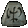 Io |
1% шанс создать навык Delirium*, уровня 50 (превращение персонажа в другое существо) при получении удара
6% шанс создать навык Mind Blast, уровня 14 при получении удара
14% шанс создать навык Terror, уровня 13 при получении удара
11% шанс создать навык Confuse, уровня 18 при нанесении удара
+2 ко всем навыкам
+261 к защите
+10 к живучести
50% больше золота с монстров
25% больше шансов найти магический предмет
Добавляет навык Attract, уровня 17 (60 зарядов) |
Щиты |
Название |
Предмет |
Руны |
Свойства |
Exile |
4-х сокетный щит паладина (только)
(4 Socket Paladin Shields (only)) |
Vex + Ohm + Ist + Dol |
15% шанс создать навык Level 5 Life Tap при нанесении удара
Добавляет ауру Defiance, уровня 13-16 когда предмет надет (варьируется)
+2 к навыку Offensive Auras (только паладин)
+30% ускоренный блок
Замораживает цель
+220-260% увеличенная защита (варьируется)
регенерация жизней +7
+5% к максимальному сопротивлению холоду
+5% к максимальному сопротивлению огню
25% больше шансов найти магический предмет
Восстанавливает 1 прочность предмета каждые 4 секунды |
Sanctuary |
3-х сокетный щит
(3 Socket Shields) |
Ko + Ko + Mal |
+20% более быстрое восстановление после удара
+20% ускоренный блок
20% увеличенный шанс блокирования
+130-160% увеличенная защита (варьируется)
+250 защиты от стрел
+20 к ловкости
Все сопротивляемости +50-70 (варьируется)
Магический урон уменьшается на 7
Добавляет навык Slow Missiles, уровня 12 (60 зарядов) |
Splendor |
2-х сокетный щит
(2 Socket Shields) |
Eth + Lum |
+1 ко всем навыкам
+10% быстрое чтение заклинаний
+20% ускоренный блок
+60-100% увеличенная защита (варьируется)
+10 к энергии
Регенерация маны + 15%
50% больше золота с монстров
20% больше шансов найти магический предмет
+3 к радиусу освещения |
Нагрудные доспехи |
Название |
Предмет |
Руны |
Свойства |
Bramble |
4-х сокетный нагрудный доспех
(4 Socket Body Armor) |
Ral + Ohm + Sur + Eth |
Добавляет ауру Thorns, уровня 15-21 (варьируется) когда предмет надет
+50% более быстрое восстановление после удара
+25-50% урона к навыкам основанных на яде (варьируется)
+300 к защите
Увеличенное количество маны на 5%
Регенерация маны + 15%
+5% максимальному сопротивлению холоду
+30% сопротивляемость огню
+100% сопротивляемость яду
+13 к жизни за каждое убийство
Добавляет навык Spirit of Barbs, уровня 13 (33 зарядов) |
Chains of Honor |
4-х сокетный нагрудный доспех
(4 Socket Body Armor) |
Dol + Um + Ber + Ist |
+2 ко всем навыкам
+200% урона по демонам
+100% урона по мертвецам
8% крадет жизни от удара
+70% увеличенная защита
+20 к силе
Регенерация жизней +7
Все сопротивляемости +65
Атакующий получает повреждения 8%
25% больше шансов найти магический предмет |
Duress |
3-х сокетный нагрудный доспех
(3 Socket Body Armor) |
Shael + Um + Thul |
+40% более быстрое восстановление после удара
+10-20% увеличенный урон (варьируется)
Добавляет 37-133 урона холодом, длительность заморозки 2 секунды
15% шанс сокрушительного удара
33% шанс открытой раны
+150-200% увеличенная защита (варьируется)
-20% расход стамины
+45% сопротивляемость холоду
+15% сопротивляемость молнии
+15% сопротивляемость огню
+15% сопротивляемость яду |
Enigma |
3-х сокетный нагрудный доспех
(3 Socket Body Armor) |
Jah + Ith + Ber |
+2 ко всем навыкам
+45% быстрый бег/ходьба
Добавляет навык Teleport уровня 1
+750-775 к защите (варьируется)
+ (0.75 основано на уровне персонажа) +0-74 к силе (в зависимости от уровня персонажа)
Увеличивает количество жизней на 5%
Атакующий получает повреждения 8%
+14 к жизни за каждое убийство
15% урона идет по мане
+ (1 основано на уровне персонажа) +1-99% больше шансов найти магический предмет (в зависимости от уровня персонажа) |
Gloom |
3-х сокетный нагрудный доспех
(3 Socket Body Armor) |
Fal + Um + Pul |
15% шанс создать навык Dim Vision, уровня 3 при получении удара
+10% более быстрое восстановление после удара
+200-260% увеличенная защита (варьируется)
+10 к силе
Все сопротивляемости +45
Уменьшает продолжительность заморозки вдвое
5% урона идет по мане
-3 к радиусу освещения |
Prudence |
2-х сокетный нагрудный доспех
(2 Socket Body Armor) |
Mal + Tir |
+25% более быстрое восстановление после удара
+140-170% увеличенная защита (варьируется)
Все сопротивляемости +25-35 (варьируется)
Атакующий получает повреждения 3
Магический урон уменьшается на 17
+2 к мане за каждое убийство
+1 к радиусу освещения
Восстанавливает 1 прочность предмета каждые 4 секунды |
Stone |
4-х сокетный нагрудный доспех
(4 Socket Body Armor) |
Shael + Um + Pul + Lum |
+60% более быстрое восстановление после удара
+250-290% увеличенная защита (варьируется)
+300 защиты от стрел
+16 к силе
+16 к живучести
+10 к энергии
Все сопротивляемости +15
Добалвяет навык Molten Boulder, уровня 16 (80 зарядов)
Добавляет навык Clay Golem, уровня 16 (16 зарядов) |